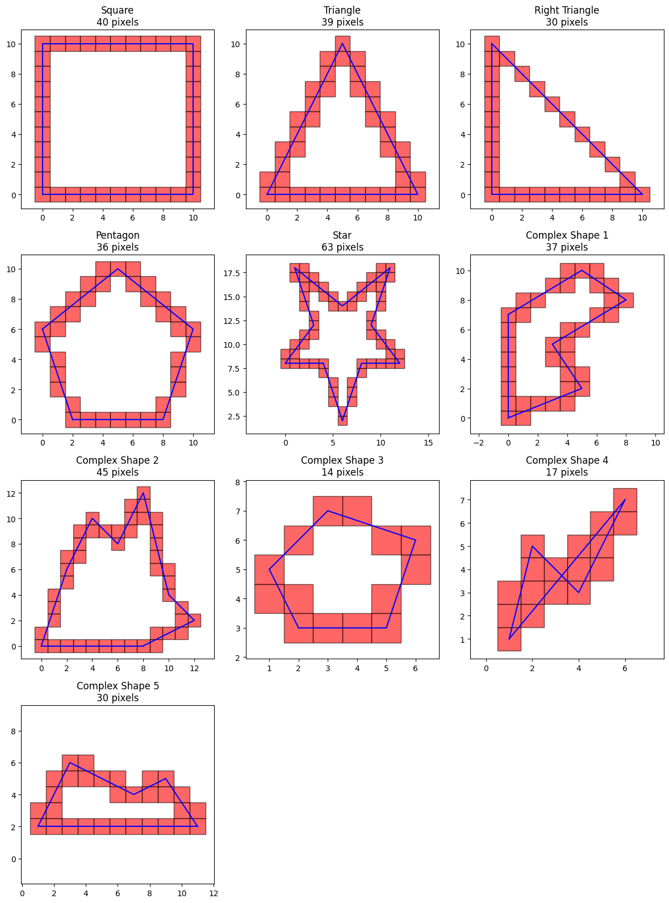
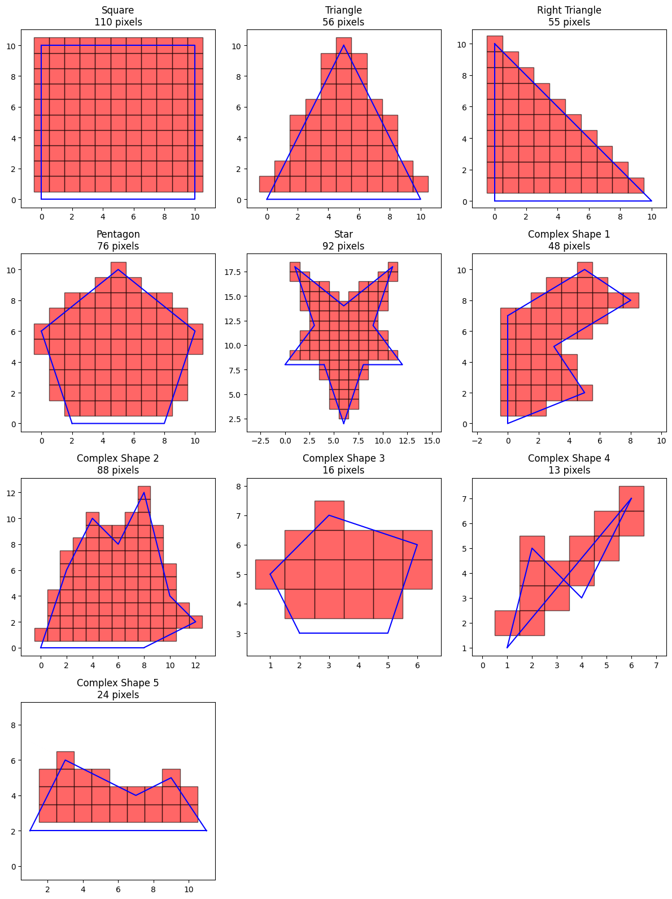
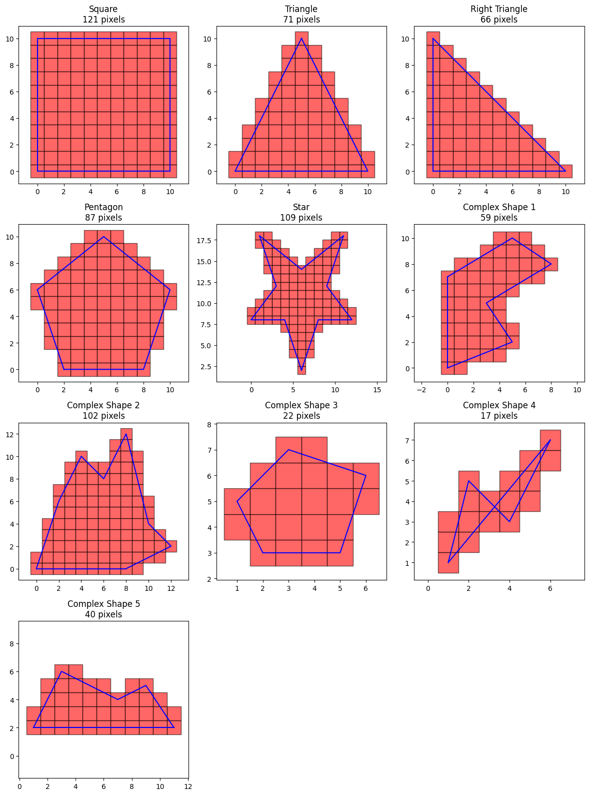
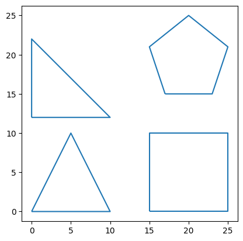
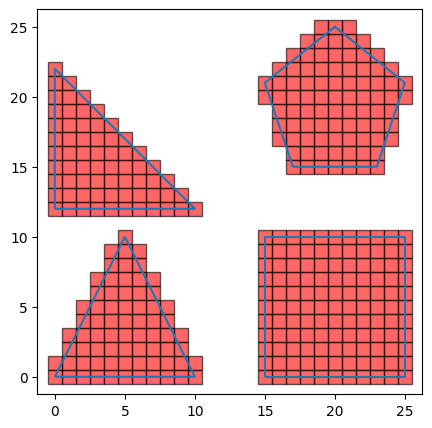
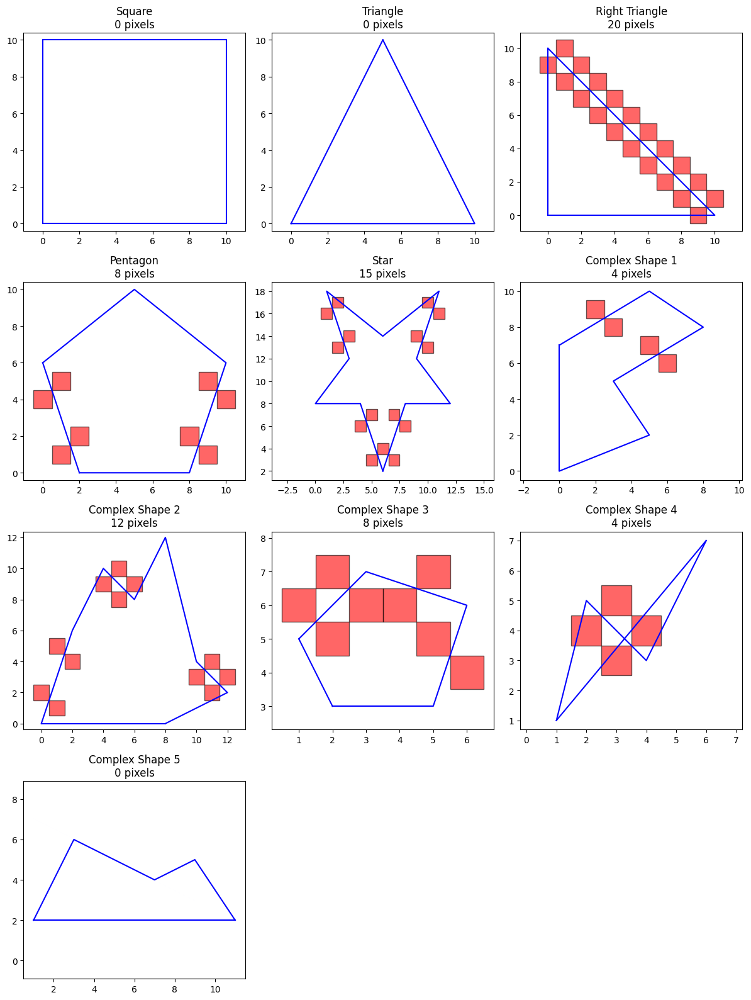
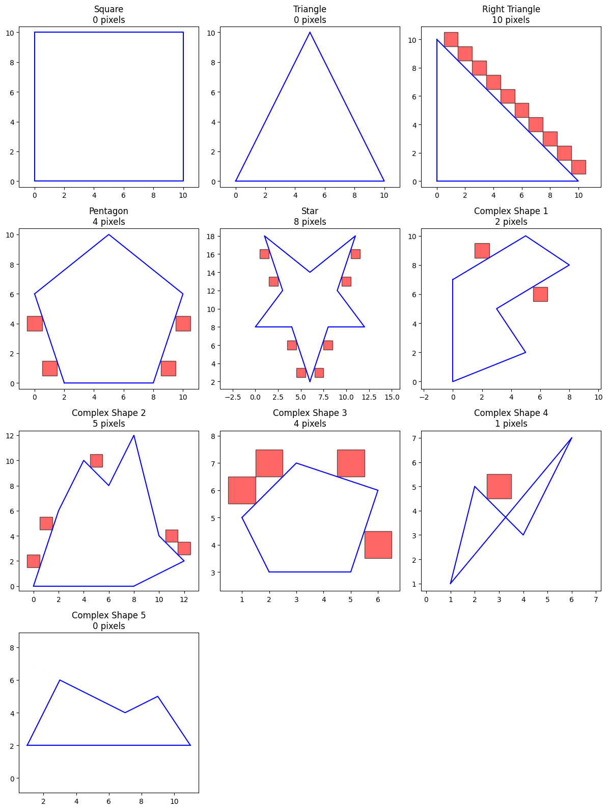
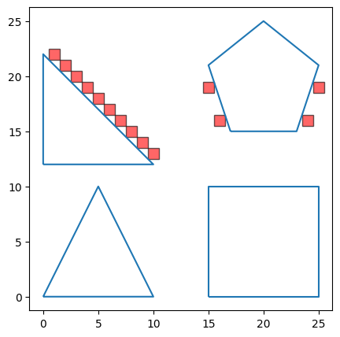

polygon_test_cases = {
"Square": [(0, 0), (10, 0), (10, 10), (0, 10)],
"Triangle": [(0, 0), (10, 0), (5, 10)],
"Right Triangle": [(0, 0), (10, 0), (0, 10)],
"Pentagon": [(2, 0), (8, 0), (10, 6), (5, 10), (0, 6)],
"Star": [
(6, 2),
(8, 8),
(12, 8),
(9, 12),
(11, 18),
(6, 14),
(1, 18),
(3, 12),
(0, 8),
(4, 8),
],
"Complex Shape 1": [(0, 0), (5, 2), (3, 5), (8, 8), (5, 10), (0, 7)],
"Complex Shape 2": [
(0, 0),
(2, 6),
(4, 10),
(6, 8),
(8, 12),
(10, 4),
(12, 2),
(8, 0),
],
"Complex Shape 3": [(2, 3), (5, 3), (6, 6), (3, 7), (1, 5)],
"Complex Shape 4": [(1, 1), (2, 5), (4, 3), (6, 7)],
"Complex Shape 5": [(1, 2), (3, 6), (5, 5), (7, 4), (9, 5), (11, 2)],
}Polygon Fill
polygon fill algorithms for speeding up grid generation

Overview
We will go over utility functions that leverage these 2 algorithms for filling in pixels in polygons fast:
- Voxel Traversal Algorithm: We use this for filling in pixels along the polygon boundary. 2D voxel traversal is used for every line segment of the polygon boundary.
- Scanline Fill Algorithm: We use this for filling in pixels in the polygon interior.
The utility functions are currently used in FastSquareGridGenerator and FastBingTileGridGenerator
At the end of this notebook, there’s a section for error correction using off-boundary pixels.
In a nutshell, how do we speed up polygon fill?
- Translate polygons from geographic coordinates (epsg:4326, epsg:3857) to pixel coordinates (integers only)
- Use the fast polygon fill algorithms to get the polygon pixels and off-boundary pixels (focus of this notebook)
- Translate pixels back from pixel coordinates to geographic coordinates (square polygons)
- Perform off-boundary pixel error correction
This notebook focuses on the fast polygon fill algorithms, while the translation functions and error correction proper are found in FastSquareGridGenerator and FastBingTileGridGenerator.
Voxel Traversal
We use the 2D voxel traversal algorithm to fill in pixels between two points.
voxel_traversal_2d
voxel_traversal_2d (start_vertex:Tuple[int,int], end_vertex:Tuple[int,int], debug:bool=False)
*Returns all pixels between two points as inspired by Amanatides & Woo’s “A Fast Voxel Traversal Algorithm For Ray Tracing”
Implementation adapted from https://www.redblobgames.com/grids/line-drawing/ in the supercover lines section
This also returns the off-diagonal pixels that can be useful for correcting errors at the corners of polygons during polygon fill*
| Type | Default | Details | |
|---|---|---|---|
| start_vertex | Tuple | ||
| end_vertex | Tuple | ||
| debug | bool | False | if true, prints diagnostic info for the algorithm |
| Returns | Dict |
Voxel traversal is used on every line segment to fill the polygon boundary.
polygon_pixels = {}
for test_polygon_name, vertices in polygon_test_cases.items():
offset_vertices = vertices[1:] + vertices[:1]
pixels = set()
for start_vertex, end_vertex in zip(vertices, offset_vertices):
pixels.update(voxel_traversal_2d(start_vertex, end_vertex)["line_pixels"])
polygon_pixels[test_polygon_name] = pixels
plot_all_polygons(polygon_test_cases, polygon_pixels)
Scanline Fill Algorithm
We use the scanline fill algorithm to fill in pixels within the polygon boundary.
scanline_fill
scanline_fill (vertices:List[Tuple[int,int]], debug:bool=False)
Returns all pixels within the interior of a polygon defined by vertices
| Type | Default | Details | |
|---|---|---|---|
| vertices | List | list of polygon vertices in order (either clockwise or counterclockwise) | |
| debug | bool | False | if true, prints diagnostic info for the algorithm |
| Returns | Set |
We use scanline fill on every set of vertices. Notice that the scanline can fill parts of the boundary as well, but it doesn’t capture the entire boundary.
polygon_pixels = {}
for test_polygon_name, vertices in polygon_test_cases.items():
polygon_pixels[test_polygon_name] = scanline_fill(vertices)
plot_all_polygons(polygon_test_cases, polygon_pixels)
Combining Voxel Traversal and Scanline Fill for our Polygon Fill Algorithm
voxel_traversal_scanline_fill
voxel_traversal_scanline_fill (vertices_df:Union[pandas.core.frame.DataFr ame,polars.dataframe.frame.DataFrame], x_col:str='x', y_col:str='y', debug:bool=False)
*Returns pixels that intersect a polygon.
This uses voxel traversal to fill the boundary, and scanline fill for the interior. All coordinates are assumed to be integers.
This also returns the off-boundary pixels that can be useful for correcting errors at the corners of polygons during polygon fill*
| Type | Default | Details | |
|---|---|---|---|
| vertices_df | Union | dataframe with x_col and y_col for the polygon vertices | |
| x_col | str | x | |
| y_col | str | y | |
| debug | bool | False | if true, prints diagnostic info for both voxel traversal and scanline fill algorithms |
| Returns | Dict |
By using both algorithms, we can fill all the pixels per polygon.
polygon_pixels = {}
for test_polygon_name, vertices in polygon_test_cases.items():
vertices_df = pd.DataFrame(vertices, columns=["x", "y"])
polygon_pixels[test_polygon_name] = voxel_traversal_scanline_fill(vertices_df)["polygon_pixels"]
plot_all_polygons(polygon_test_cases, polygon_pixels)
Putting it all together to fill multiple polygons in a GeoDataFrame
Here we build up to the fast_polygon_fill function that can fill in multiple polygons and MultiPolygon geometries in an AOI. This essentially means using voxel_traversal_scanline_fill on each individual polygon in the AOI.
multipolygon_dict = {
"Square": Polygon([(15, 0), (25, 0), (25, 10), (15, 10)]),
"Triangle MultiPolygon": MultiPolygon(polygons = [
Polygon([(0, 0), (10, 0), (5, 10)]),
Polygon([(0, 12), (10, 12), (0, 22)])],
),
"Pentagon": Polygon([(17, 15), (23, 15), (25, 21), (20, 25), (15, 21)]),
}
multipolygon_gdf = gpd.GeoDataFrame(geometry=gpd.GeoSeries(multipolygon_dict))
multipolygon_gdf.index.name = "geom_name"
multipolygon_gdf = multipolygon_gdf.reset_index()
multipolygon_gdf| geom_name | geometry | |
|---|---|---|
| 0 | Square | POLYGON ((15 0, 25 0, 25 10, 15 10, 15 0)) |
| 1 | Triangle MultiPolygon | MULTIPOLYGON (((0 0, 10 0, 5 10, 0 0)), ((0 12... |
| 2 | Pentagon | POLYGON ((17 15, 23 15, 25 21, 20 25, 15 21, 1... |
multipolygon_gdf.boundary.plot()
plt.show()
Converting Polygons and MultiPolygons to a list of vertices
The polygons_to_vertices function can convert all polygons and multipolygons in a GeoDataFrame to a Polars DataFrame of vertices. This is a preparation step for fast_polygon_fill.
Note: It is also feasible to convert it to a Pandas DataFrame but using Polars is more efficient for vectorized translations between geographic coordinates and pixel coordinates.
polygons_to_vertices
polygons_to_vertices (polys_gdf:geopandas.geodataframe.GeoDataFrame, unique_id_col:Optional[str]=None)
| Type | Default | Details | |
|---|---|---|---|
| polys_gdf | GeoDataFrame | ||
| unique_id_col | Optional | None | the ids under this column will be preserved in the output tiles |
| Returns | DataFrame |
The output is a dataframe of vertices across all polygons.
If the original coordinates are based on a geographic coordinate system such as epsg:4326 or epsg:3857, then there would normally need to be an additional step to translate it from geographic coordinates to pixel coordinates. But since our sample polygons are already based on pixel coordinates, then we only need to cast the vertex coordinates x, y to an integer dtype.
vertices_df = polygons_to_vertices(multipolygon_gdf, "geom_name")
vertices_df = vertices_df.cast({"x":PIXEL_DTYPE, "y":PIXEL_DTYPE})
vertices_df.head()
shape: (5, 4)
| geom_name | __subpolygon_id__ | x | y |
|---|---|---|---|
| str | i64 | i32 | i32 |
| "Square" | 0 | 15 | 0 |
| "Square" | 0 | 25 | 0 |
| "Square" | 0 | 25 | 10 |
| "Square" | 0 | 15 | 10 |
| "Square" | 0 | 15 | 0 |
Getting pixels within each polygon
The fast_polygon_fill function is generally a wrapper on voxel_traversal_scanline_fill to find all pixel coordinates within each polygon in the AOI.
fast_polygon_fill
fast_polygon_fill (vertices_df:polars.dataframe.frame.DataFrame, unique_id_col:Optional[str]=None)
| Type | Default | Details | |
|---|---|---|---|
| vertices_df | DataFrame | integer vertices of all polygons in the AOI | |
| unique_id_col | Optional | None | the ids under this column will be preserved in the output tiles |
| Returns | Dict |
The output is a polars datafarame containing all the pixels within all the AOI polygons. The unique_id_col parameter can be used to assign to each pixel its corresponding geometry name from the original AOI. This saves us effort from having to perform another spatial join to get the geometry names.
If the original AOI is based on a geographic coordinate system such as epsg:4326 or epsg:3857, then there would need to be an additional step to translate it from pixel coordinates back to geographic coordinates. To represent a pixel in geographic coordinates, you would need translate both the lower left corner and upper right corner to represent a rectangular polygon. But in this case it’s not necessary to do the translation since the original AOIs are already based on pixel coordinates. You can refer to the _xy_to_bbox method in FastSquareGridGenerator and FastBingTileGridGenerator for reference.
filled_polygons = fast_polygon_fill(vertices_df, "geom_name")["tiles_in_geom"]
filled_polygons.head()
shape: (5, 3)
| x | y | geom_name |
|---|---|---|
| i32 | i32 | str |
| 18 | 10 | "Square" |
| 8 | 1 | "Triangle MultiPolygon" |
| 8 | 12 | "Triangle MultiPolygon" |
| 20 | 20 | "Pentagon" |
| 3 | 0 | "Triangle MultiPolygon" |
# counting pixels per geometry
filled_polygons.group_by("geom_name").len()
shape: (3, 2)
| geom_name | len |
|---|---|
| str | u32 |
| "Pentagon" | 87 |
| "Triangle MultiPolygon" | 137 |
| "Square" | 121 |
fig, ax = plt.subplots(figsize=(5,5))
ax = multipolygon_gdf.boundary.plot(ax = ax)
for idx, row in filled_polygons.to_pandas().iterrows():
x = row["x"]
y = row["y"]
rect = patches.Rectangle(
xy=(x - 0.5, y - 0.5),
width=1,
height=1,
linewidth=1,
edgecolor="black",
facecolor="r",
alpha=0.6,
)
ax.add_patch(rect)
plt.show()
Error Correction using Off-Boundary Pixels
Off-boundary pixels are pixels that have at least one corner tangential to an AOI polygon’s edge. They are useful for gridding error correction in FastSquareGridGenerator and FastBingTileGridGenerator.
When we translate a polygon from geographic coordinates to pixel coordinates, we inevitably have to round the polygon vertex coordinates to the nearest higher or lower integer. For some pixels, this rounding results in one of the pixel corners to be just tangent to the translated polygon boundary. But if it were in the original geographic coordinates, the boundary would have had intersected a portion of the pixel’s interior, not just exactly at a corner.
Thus, there will sometimes be pixels that when in geographic coordinates actually intersect the AOI, but when in pixel coordinates are only tangential to the AOI polygon. When we use the fast polygon fill algorithm, it doesn’t consider these tangential pixels, also called off-boundary pixels, as part of the filled-in pixel set. So to correct this error, we need to first identify the off-boundary pixels and then select which ones to add to the filled-in pixel set.
How do we implement error correction?
We determine which pixels to add to the filled-in pixel set by intersecting the polygon boundary linestring with the off-boundary pixel polygon. Both the linestring and the off-boundary pixel polygon should be in geographic coordinates, not pixel coordinates. The pixels that intersect should be added to the filled-in pixel set. You can find this implementation in the generate_grid method under FastSquareGridGenerator and FastBingTileGridGenerator
Why can’t we just add all of the off-boundary pixels? We can’t because not all of the off-boundary pixels actually intersect the polygon when in geographic coordinates.
Won’t there be an increased computational cost from using a geometry intersection operation? Yes, this additional step will add compute time but the increase in computational cost should be minimal since we’re doing a linestring to polygon intersection (not a polygon to polygon intersection), and the off-boundary pixels should be a small fraction of the total pixels.
Why is error correction not implemented in this notebook? In this particular notebook we’re only working with pixel coordinates, so the translation problem isn’t a concern and we don’t need error correction. It’s a concern when you’re starting off with geographic coordinates, as shown in FastSquareGridGenerator and FastBingTileGridGenerator.
The section below demonstrates the utility functions for getting off-boundary pixels
- Get off-diagonal pixels for a single polygon using
voxel_traversal_2d - Get off-boundary pixels for a single polygon using
voxel_traversal_scanline_fill - Get off-boundary pixels for a GeoDataFrame using
fast_polygon_fill
Off-Diagonal Pixels
Off-boundary pixels originate from off-diagonal pixels. Off-diagonal pixels occur whenever there is a diagonal step in the voxel traversal algorithm (hence the name).
Notice below that some of the off-diagonal pixels are in the interior. Later in the voxel_travresal_scanline_fill function we’ll be filtering these further to include only off-diagonal pixels on the polygon’s exterior. The filtered pixels are the off-boundary pixels.
off_diagonal_pixels = {}
for test_polygon_name, vertices in polygon_test_cases.items():
offset_vertices = vertices[1:] + vertices[:1]
pixels = set()
for start_vertex, end_vertex in zip(vertices, offset_vertices):
pixels.update(voxel_traversal_2d(start_vertex, end_vertex)["off_diagonal_pixels"])
off_diagonal_pixels[test_polygon_name] = pixels
plot_all_polygons(polygon_test_cases, off_diagonal_pixels)
Off-Boundary Pixels
Off-boundary pixels are almost the same as the off-diagonal pixels, just filtered to only include pixels on the polygon exterior. These are what we use for gridding error correction.
Inside voxel_traversal_scanline_fill, the filtering is done by getting the set difference between the the off-boundary pixels and the interior pixels from scanline fill.
off_boundary_pixels = {}
for test_polygon_name, vertices in polygon_test_cases.items():
vertices_df = pd.DataFrame(vertices, columns=["x", "y"])
off_boundary_pixels[test_polygon_name] = voxel_traversal_scanline_fill(vertices_df)["off_boundary_pixels"]
plot_all_polygons(polygon_test_cases, off_boundary_pixels)
Putting it all together to get off-boundary pixels of a GeoDataFrame
The fast_polygon_fill function also returns the off-boundary pixels across all geometries in a GeoDataFrame
multipolygon_gdf.head()| geom_name | geometry | |
|---|---|---|
| 0 | Square | POLYGON ((15 0, 25 0, 25 10, 15 10, 15 0)) |
| 1 | Triangle MultiPolygon | MULTIPOLYGON (((0 0, 10 0, 5 10, 0 0)), ((0 12... |
| 2 | Pentagon | POLYGON ((17 15, 23 15, 25 21, 20 25, 15 21, 1... |
vertices_df = polygons_to_vertices(multipolygon_gdf, "geom_name")
vertices_df = vertices_df.cast({"x":PIXEL_DTYPE, "y":PIXEL_DTYPE})
tiles_off_boundary = fast_polygon_fill(vertices_df, "geom_name")["tiles_off_boundary"]
tiles_off_boundary.head()
shape: (5, 3)
| x | y | geom_name |
|---|---|---|
| i32 | i32 | str |
| 9 | 14 | "Triangle MultiPolygon" |
| 24 | 16 | "Pentagon" |
| 2 | 21 | "Triangle MultiPolygon" |
| 6 | 17 | "Triangle MultiPolygon" |
| 10 | 13 | "Triangle MultiPolygon" |
# counting pixels per geometry
tiles_off_boundary.group_by("geom_name").len()
shape: (2, 2)
| geom_name | len |
|---|---|
| str | u32 |
| "Pentagon" | 4 |
| "Triangle MultiPolygon" | 10 |
fig, ax = plt.subplots(figsize=(5,5))
ax = multipolygon_gdf.boundary.plot(ax = ax)
for idx, row in tiles_off_boundary.to_pandas().iterrows():
x = row["x"]
y = row["y"]
rect = patches.Rectangle(
xy=(x - 0.5, y - 0.5),
width=1,
height=1,
linewidth=1,
edgecolor="black",
facecolor="r",
alpha=0.6,
)
ax.add_patch(rect)
plt.show()